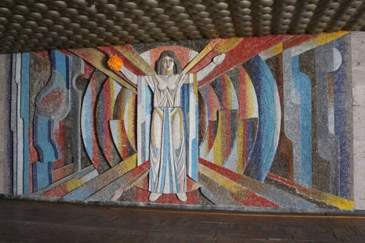

Notes
Technical notes
Short notes on methods we use. They describe engineering approaches, not client projects.
Voltage-drop-based physical identification for CAN devices
Supply-line voltage measured at start-up can help map identical CAN nodes to their physical positions in the harness. A position hint, never a replacement for UID-based identity.
Hardware vs. software reliability in MCU-based control systems
FIT and MTTF figures from ISO 13849-1, SN 29500 and semiconductor data compared for a discrete analog circuit and an MCU, with the dependability taxonomy that explains the result.